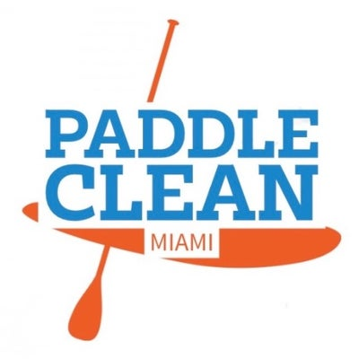

JPMorganChase
Incoming Global Finance & Business Management Summer Analyst
STANFORD ’28 · MIAMI BEACH ROOTS
Economics & International Relations.
Interested in how business creates opportunity.
Incoming Global Finance & Business Management
Summer Analyst at JPMorganChase · Summer 2027
In Madrid with Stanford BOSP · Autumn 2026
I’m a Cuban-American, first-generation Stanford student from Miami Beach. My work spans financial analysis, behavioral research, and community building—from fintech in Mexico City to the waterways back home.
Incoming Global Finance & Business Management Summer Analyst
Finance & Business Intern
Consulting Extern
Behavioral Lab · Research Assistant
Career development apprenticeship · Feb 2025–Present
Advised 25+ students on applications, scholarships, and financial aid.
2021–2024 · Trained 10+ baristas, led 40+ coffee education sessions, and earned Employee of the Year recognition.
First-generation students & family relationships
Research on immigrant families, cultural expectations, and belonging among first-generation Latinx college students.
Course research · POLISCI 120B
Analyzed American National Election Studies data from 1980–2012 to examine political trust, governing-party support, and strength of partisan identification.
Stanford BOSP Madrid · Research project
Exploring student adaptation and cultural engagement through interviews with students, host families, and program administrators, with Spanish transcription and qualitative analysis.

Founder & Managing Director
Built a youth-led initiative combining paddleboarding with waterway and coastal cleanups.
Wilbur Hall, Rinconada · Summer 2026. Supported residential programming and student engagement, including a talent show with 18 performances.
Office of Community Standards Undergraduate Representative · Haas Center Frosh Service Liaison · Sigma Phi Epsilon Social Chair and Rush Chair · The Stanford Daily writer.
Bachelor’s degree candidate · Economics & International Relations
QuestBridge National College Match Scholar.
Selected coursework Economic analysis (ECON 50, ECON 131), political science (POLISCI 116M, POLISCI 120B), and political communication (COMM 162/262).
Tools & methods R, Python, C++, survey analysis, qualitative interviews, and data visualization.
International experience Stanford BOSP Madrid · Stanford Global Seminar in Cape Town · Aplazo internship in Mexico City.
International Baccalaureate Diploma · Summa cum laude
Financial & Valuation Modeling
Credential ID 191232710
Equities Markets (EMC©)
Credential ID 191235516
Let’s connect.
Finance, strategy, research, and ideas worth building.